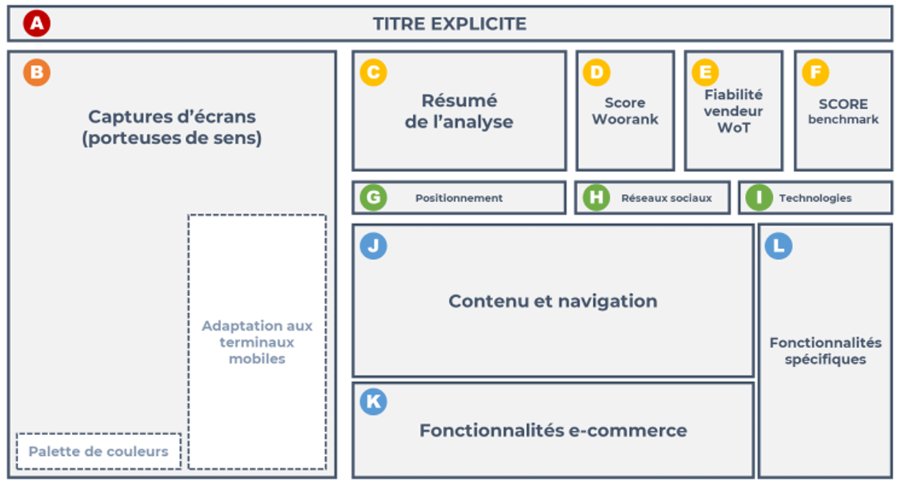

5 - Benchmark Digital#
Vous venez de faire une étude de marché, peut-être avez vous trouvé durnat vos recherches et la mise en place de votre système de veille, quelques compétiteurs qui sont déja des acteurs de votre marché. L’idée principale du Benchmark Digital est l’analyse de ce que font ces acteurs afin de mieux comprendre leur stratégie et d’adapter la nôtre en fonction.
Informations
✍ - Vincent
🚧 - En cours
🔨 - 12/08/2025
🕑 - 20 - 30 min
Syllabus
Module 5: Savoir réaliser un benchmark digital
Objectif global:
L’objectif global est que l’apprenant comprenne et maîtrise les étapes d’identification des utilisateurs mais aussi sache créer et utiliser des fiches personna.
Plan de cours:
I. Les sites critères pertinents à étudier
Qu’est-ce qu’un benchmark
Identifier des critères mesurables et utilisables
Repérer les concurrents pertinents à analyser
Définir les critères de votre analyse concurrentielle
Identifier les meilleures fonctionnalités
II. Construire les outils support :
Élaborer une grille d’analyse
Construire une fiche de restitution
Conclure son étude par un mapping et une synthèse
Livrables:
Avoir la méthode et les outils pour réaliser un benchmark digital
Support de Cours
Les Attendus#
{kind=link}

Voici un exemple de slide pour présenter les résultats de votre benchmark#
Note
Créer une version interactive avec genially
Le Cours#
Warning
Gros focus sur le score Woorank
Tableau de Benchmark#
Note
Mettre le tableau de benchmark et expliquer le système de notation
Examples#
Note
Sélectionner des projets et mettre des liens vers les projets des apprenants en question
Synthèse#
Note
Introduire ici le tableau de benchmark et surtout expliquer les différentes sections et comment elles doivent çetre remplie
Example
Benchmark Technologique#
Analyser le site de ses concurrents en se mettant dans la peu de ses utilisateurs
Note
Lien vers les critères de bastien et scapin vue en webdesign
Outils#
Note
Faire un benchmark des différents outils
AZ jouter que si besoin de rentrer son numéro de carte pour obtenir une version d’éssaie, le site suivant peut générer des numéros de carte aléatoire : namso-gen.com
Wappalyzer#
Cette extension pour Firefox permet de définir les techniques utilisées sur un site internet. Vous pouvez par conséquent scanner et analyser les sites de vos concurrents pour comprendre leur fonctionnement et les types de logiciels qu’ils utilisent. Dès qu’un site web vous plaît, vous pourrez comprendre comment il a été conçu et retenir les initiatives intéressantes.
{kind=link}
Woorank#
Ce logiciel propose une analyse du référencement naturel (SEO) mettant en évidence les points faibles et les facteurs d’amélioration des sites internet. Vous pouvez collecter des données sur les sites de vos concurrents mais également sur le vôtre. De quoi savoir rapidement comment accroître votre visibilité et comprendre les techniques de vos concurrents !
{kind=link}
Semrush#
C’est un logiciel qui permet de suivre son positionnement et celui de ses concurrents sur les différents moteurs de recherche. Il met à votre disposition de nombreuses informations intéressantes pour optimiser sa stratégie de référencement naturel. Vous pourrez notamment analyser les sources de trafic d’une page web, observer le positionnement de sites et les nouveaux concurrents, cibler des mots-clés, etc.
Semrush
{kind=link}
Ahrefs#
Il s’agit d’un logiciel d’analyse de référencement. Ahrefs vous aide à comprendre pourquoi vos concurrents se classent si haut dans les résultats des moteurs de recherche et ce que vous devez faire pour les distancer. Il propose de nombreux outils comme des recherches de mots-clés, l’analyse des liens entrants, du contenu et le suivi du classement des moteurs de recherche pour vous fournir des données complètes.
Ahrefs
{kind=link}
Majestic#
C’est un outil d’analyse utile pour vos campagnes de netlinking. Il vous propose de scanner les backlinks d’un site internet pour déterminer leur valeur et donc leur impact sur votre référencement naturel. Grâce à ses conseils vous pourrez maximiser l’impact de votre netlinking et ses autres fonctionnalités une analyse poussée de différents liens.
Majestic
Note
Intérésant de comparer les deux pour vérifier que les résultats sont similaires
Note
a tester
Note
Outil pour réaliser des captures d’écran vidéo
Warning
Très bon outil (très, trop ?) puissant!
Analyse Technologie#
Wappalyzer#
Fonctionnalités : Identifie CMS, frameworks, langages serveur, outils d’analyse, widgets, CDN, etc.
Extension navigateur disponible (Chrome/Firefox).
Très simple d’utilisation : il suffit de saisir l’URL du site.
BuiltWith#
Très complet, notamment pour les sites e-commerce.
Donne des informations détaillées sur les technologies front-end, back-end, hébergement, sécurité, etc.
Utilisé aussi pour la veille concurrentielle.
WhatRuns#
Extension navigateur légère et intuitive.
Affiche les technologies utilisées directement lors de la navigation sur un site.
Très pratique pour une utilisation rapide et discrète.